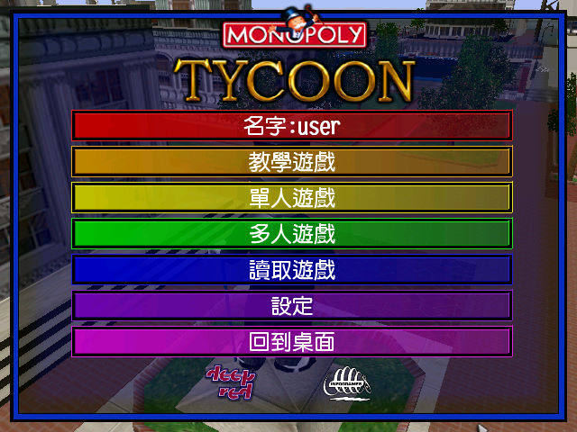
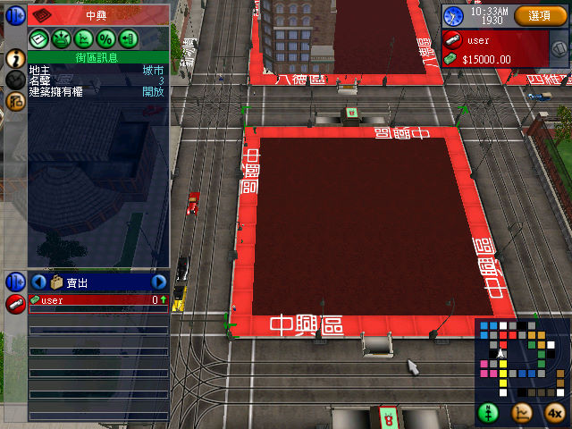

名稱：帝國企業／強手大亨／強手帝國／大富翁大亨 (Monopoly Tycoon，繁中／簡中版)
簡介：Deep Red 2001年出品的即時建築管理經營模擬遊戲，由Infogrames代理發行。台灣由
英寶格中文化並代理發行，大陸由天人互動簡中化並代理發行 [待補]。


保護：光碟
備註：繁中版為1.2版
備註：簡中版只能在簡中系統上安裝（可在繁中系統上執行）。
備註：簡中版係採外掛方式進行即時翻譯，將滑鼠移到想要知道中文意思的英文文字上，即
會自動顯示出中文。繁中版則是完整中文化。